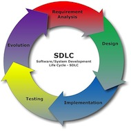

Stage 1: Plan
Ensure a Successful Implementation · this stage on toolkit.ihris.org
From the iHRIS Implementation Toolkit, toolkit.ihris.org. Text published with the owner's permission (2026-09-23); reader comments from the original site are not reproduced.
A planning phase is essential for defining the system requirements before installation of iHRIS begins. These requirements should build on the work done during the Assess stage.
Planning (as well as all subsequent stages) should be done in consultation with stakeholders. Understanding the various perspectives of the stakeholders and finding areas of consensus are important to ensure the success of the implementation. Representatives from the stakeholder organizations make up the Stakeholder Leadership Group (SLG). (An alternative established mechanism of stakeholder leadership might be an existing national Health Workforce Observatory or an HRH taskforce.) Forming the SLG requires high-level buy-in from HRIS champions (see Stage 0: Governance).
Together with the SLG, you will write the implementation plan, a detailed action plan for how iHRIS will be deployed. You will also collaboratively determine the requirements for customizing iHRIS so that it will produce the necessary data for informed decision making. The SLG should have final approval of these important deliverables.

Governance
- Working with identified leaders, determine which representatives from stakeholder groups to invite to join the SLG. In the initial meeting, agree on Principles of Operation and Terms of Reference for the group.
Project Management
- Develop roles and responsibilities for the members of the implementation team.
- Establish tools for managing the project and working with the implementation team.
- Example: GANTT Chart pdf
- Open source project management software, such as GanttProject external-link · external
Software & Systems
- With the SLG and the implementation team, collaboratively develop the system requirements and document them using a standard methodology.
- Template: User Requirements Specifications document
- Collaborative Requirements Development Methodology (CRDM) Walk-through external-link · external
- Documentation: Use Case Development Tool and iHRIS Use Cases document
Data Sharing & Interoperability
- Identify standards to use when sharing data with other systems in the HIS.
- Tipsheet: Standardized Data Lists document
- WHO’s ISCO-08 Classification of a health worker external-link · external
- Care Services Discovery Standard external-link · external
Data Quality & Standards
- Identify the sources of standard HRH data to be used in iHRIS. Determine whether the data are consistently formatted and coded across these sources. If not, decide with the SLG what the standards should be and document them with the system requirements.
- Worksheet: Standard Datasets spreadsheet
- Establishing and Using Data Standards in Health Workforce Information Systems (CapacityPlus, 2014) external-link · external
- Review with the SLG data collection processes and forms. Revise forms to provide the minimum necessary dataset to answer policy and management questions.
Training & Support
- Train data collectors to use revised data collection forms. Data collection can begin at any point after the data collectors are trained.
- Job Aid: Fill Data Collection Form document
Data Use & Reporting
- Document requirements for reports produced by iHRIS.
- Template: Reporting Requirements spreadsheet
Deliverable
- Write the project implementation plan and attach the system and reporting requirements, as well as any data collection forms and supporting documentation. Share the plan with the SLG for their approval before proceeding with deployment.
Challenges
When determining the system requirements, it is important to assess the priority of each desired feature. A common challenge in software development projects is what’s known as “feature creep,” when the number of features expected of the system begin to creep outside the defined scope or document requirements for the software. Setting priorities and estimating development times will help determine which features are most important and which can be put off until a later iteration. As project manager, you will need to manage changing priorities and keep expectations realistic.
Technical terms
- Stakeholder Leadership Group (SLG)
- The Stakeholder Leadership Group (SLG)is a committee of representatives from all of the stakeholder organizations; the purpose of the group is to agree on the goals for iHRIS and oversee its implementation.
- System requirements
- System requirements tell the software developers how to customize the software in order to fulfill the stakeholders’ needs for collecting, sharing, reporting, and ensuring quality of data.
- Principles of operation
- Principles of operation define how the group will work together and the values that underlie the group’s operations.
- Terms of reference
- Terms of reference describe the group’s purpose, vision, and goals, and they often assign roles and responsibilities to group members.
- dataset
- A dataset is a collection of related sets of information composed of separate elements that can be manipulated as a unit.